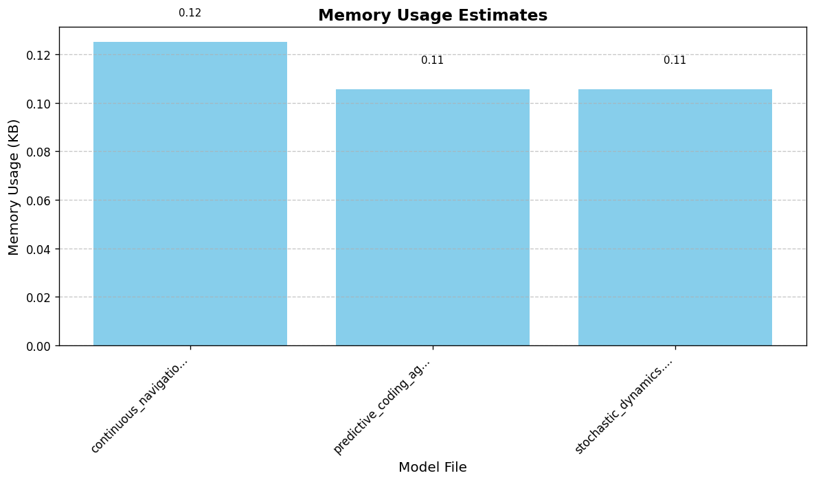
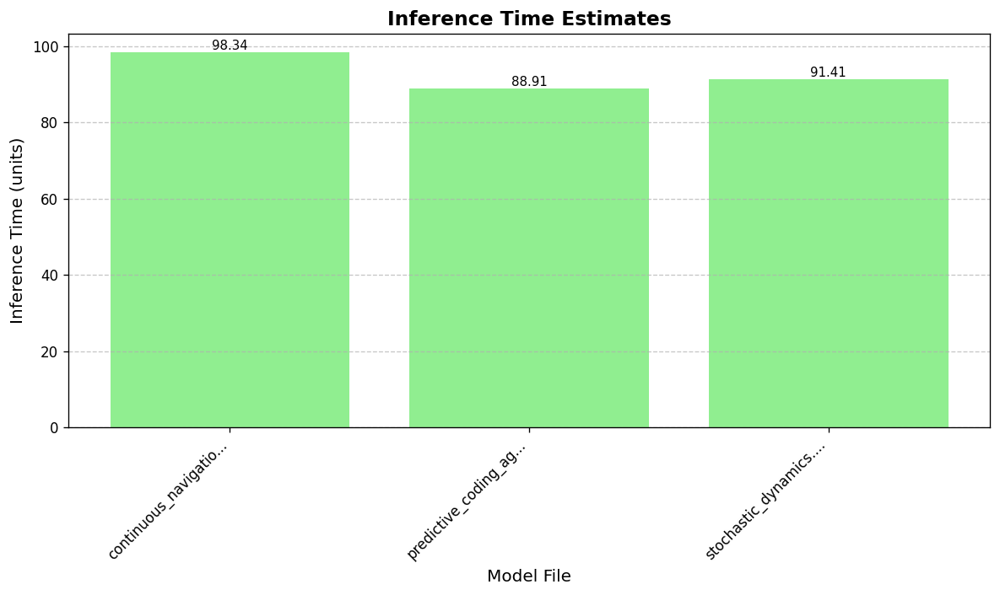
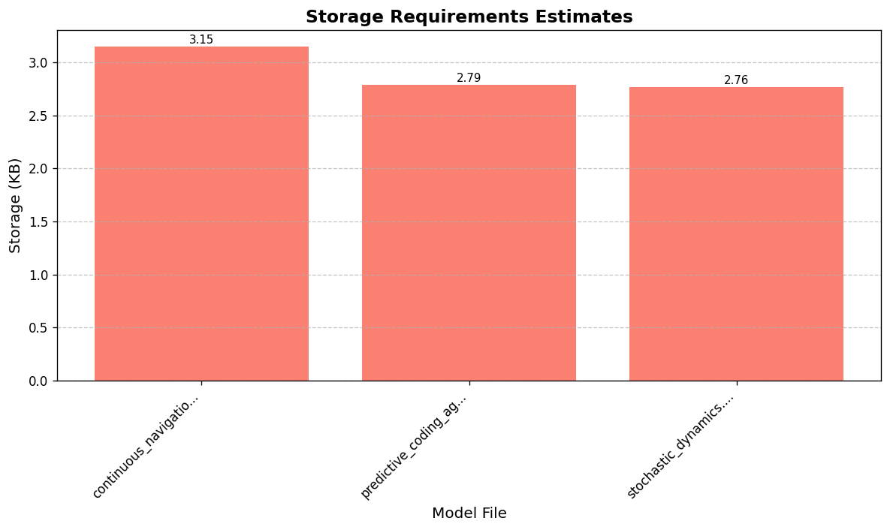

Path: input/gnn_files/continuous/continuous_navigation.md
Model Type: Dynamic
| Metric | Estimate | Description |
|---|---|---|
| Memory Footprint | 0.12 KB | RAM needed for variables |
| Inference Cost | 98.34 units | Relative computational cost |
| Storage Required | 3.15 KB | Disk space for model file |
| FLOPS Estimate | 1.10e+02 | Floating-point operations per inference |
| Est. Inference Time | 0.0000 ms | Approximate time on typical CPU |
Path: input/gnn_files/continuous/predictive_coding_agent.md
Model Type: Dynamic
| Metric | Estimate | Description |
|---|---|---|
| Memory Footprint | 0.11 KB | RAM needed for variables |
| Inference Cost | 88.91 units | Relative computational cost |
| Storage Required | 2.79 KB | Disk space for model file |
| FLOPS Estimate | 1.18e+02 | Floating-point operations per inference |
| Est. Inference Time | 0.0000 ms | Approximate time on typical CPU |
Path: input/gnn_files/continuous/stochastic_dynamics.md
Model Type: Dynamic
| Metric | Estimate | Description |
|---|---|---|
| Memory Footprint | 0.11 KB | RAM needed for variables |
| Inference Cost | 91.41 units | Relative computational cost |
| Storage Required | 2.76 KB | Disk space for model file |
| FLOPS Estimate | 1.10e+02 | Floating-point operations per inference |
| Est. Inference Time | 0.0000 ms | Approximate time on typical CPU |